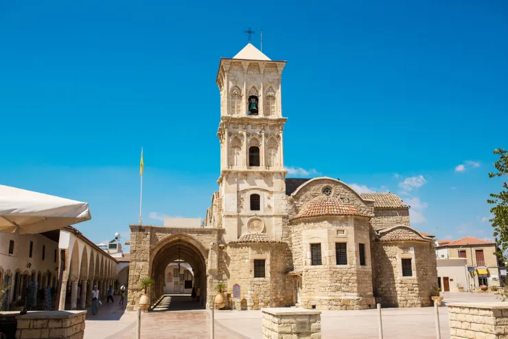

Народилась 12 жовтня 2004 року в місті Київ
Навчалась в школі №101 2013-2022рр, зараз навчаюсь в КПІ
Ларнака — місто на південно-східному узбережжі Кіпру,
В античні часи на місці Ларнаки стояло місто Кітій, засноване, за переказом, одним з онуків Ноя, легендарним Кіттімом, котрий не раз згадується в Біблії. Тут археологи розкопали руїни поселень, де люди жили вже в II тисячолітті до н. е. В 1075 р. до н. е. місто було зруйновано в результаті землетрусу. Лише в VIII ст. до н. е. його знову відбудували фінікійці, котрі заснували тут свою торговельну факторію.
